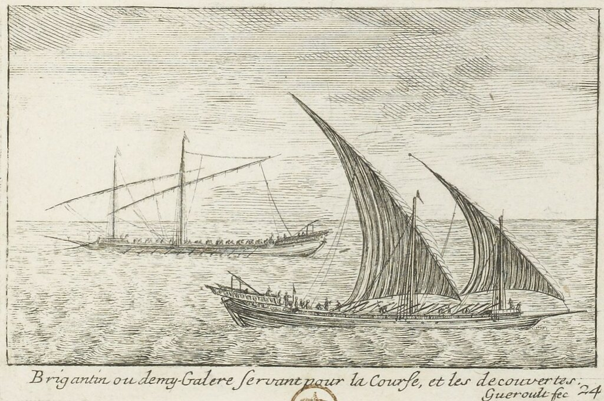
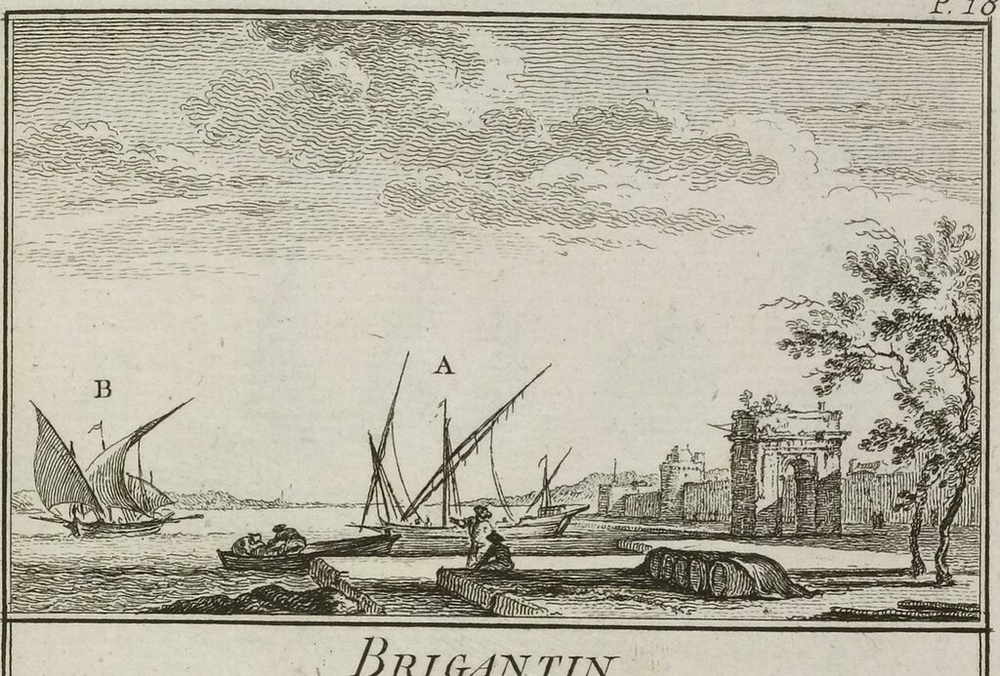
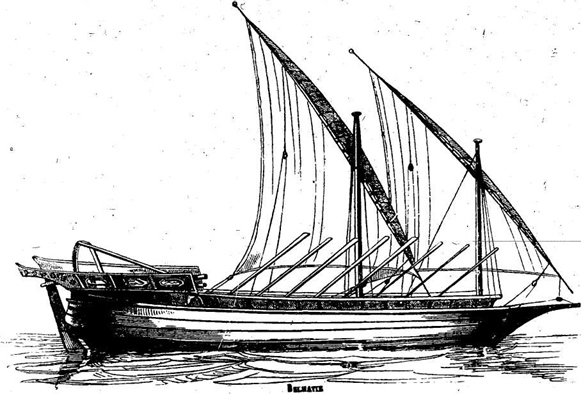

Напомню, что мы обсуждаем список кораблей, которые строились на верфях Лигурии, с указанием дат их первого и последнего появления в генуэзских документах. Сегодня очередь дошла до бригантины.
Brigantino (с 1387 до наших дней).
Мы коротко касались этого типа кораблей, когда говорили о галерах Англии.

Бригантин, или полугалера. Гравюра из альбома P. J. Gueroult du Pas (1710)
Быть может благоразумным было бы ограничиться здесь небольшой справкой, не пускаясь в длительные рассуждения. Ибо нет другого типа корабля, о котором было бы написано столько противоречивого в нашей литературе. Вмешаться в обсуждение этой темы – значит навлечь на себя упреки в некомпетентности ( ибо кто же у нас не является специалистом в бригантинах?!) или, в лучшем случае, в поверхностном взгляде на предмет. Велик соблазн отложить эту тему на потом, т.е. в никогда. Но все же решил преодолеть себя (ведь надо же когда-нибудь).
Итак, бригантина. («Только чуточку прищурь глаза»!) Начнем с первого упоминания этого корабля в хрониках Средних веков. По времени оно совпадает с началом строительства бригантин на верфях Лигурии – вторая половина XIV века. Упоминаний этого корабля в более ранних документах пока никому еще найти не удалось. Первое достоверное упоминание (в форме brigandin: – «наши маленькие вооруженные корабли, которые называются бригантины») мы встречаем в «Хрониках» Фруассара:
« Nous avons avisé et regardé que, à l'entrer au Havre et prendre terre pour eux saluer, nous en volerons premiers et mettrons entre nos petits vaisseaux armés que on appelle Brigandins... »
Froissart, Chron., liv. iv, chap. 15 (Expédition contre la ville d'Afrique, 1390).
Многочисленные орфографические формы этого термина вряд ли способны нас затруднить. Все очень прозрачно. И если исходная форма, как представляется, появилась в Венеции в виде bergantin, то уже пришедший в Геную термин в результате метатезы и приобретения типично итальяского окончания превратился в brigantino. И уже пошло-поехало по всей Европе: португальское bargantim, испанское bergantin (каталонское berganti), французское brigantin, и, естественно, в многочисленных итальянских городах и весях – brigantino. В Северную Европу термин добрался позже, но сильно не изменился. В Турцию он пришел, испытав лишь приспособление к фонетическому строю языка, превратившись в pergende, . Вместе с введением латинской графики в турецкую письменность проник и латинизированный термин для бригантины (brigantin), и хотя турки – не французы, и за чистоту родного языка горло не перегрызут, все же народные традиции сильны и pergende не сдает своих позиций.
Если по нашей версии термин появился на Средиземном море, то корни его искать следует там же? И да, и нет. Всеми признается, что в этимологии термина бригантина основную роль играет итальянское слово briga, но произошло ли название корабля непосредственно от самого этого слова или через посредство доспеха солдат, который также называли бригантин, сейчас сказать трудно. Брига означает спор, схватку, сражение и даже войну. Производное от него brigante – это fantaccino mercenario di piccole compagnie – наемный пехотинец в небольшом военном отряде, как правило у частных военачальников. Отсюда вольница этих бригантов, граничащая с разбоем и мародерством. Итальянские лексикографы считают, что появившиеся в середине XIV века быстрые и маневренные бригантины, как нельзя лучше подходящие для морских пиратов и разбойников, получили свое название по аналогии с бригантами на суше. Эти скоростные и маневренные качества бригантин вошли у итальянцев в поговорку: Dove va la nave, ben può andare il brigantino – там где пройдет корабль, точно проскочит бригантина.

Бригантины. Обратим внимание на латинское парусное вооружение этих кораблей. (Гравюра Nicolas-Marie Ozanne (1728-1811) из альбома «Marine militaire…»)
Есть и более глубокие рассуждения, связывающие термин бригантина с кельтским народом бриганты (Brigantes), проживающим на территории Британии. Считается, что название этого народа происходит от возвышенного места, на котором они обитали. Действительно, изучение многочисленных топонимов Европы с корнем brig подтверждает эту гипотезу. (Кстати, мой младший брат родился в городе Бриг, теперь польский Бжег. Но тогда это было типично немецкое местечко и тусили мы на улицах городка с немецкими пацанами. Это потом уже они все выехали в Германию. Напрасно, видимо, мы поддались уговорам союзников и отдали эти территории полякам. Вместо благодарности за это мы получили снос памятников тем, кто полил эти высоты своей кровью.). Однако, по-моему, это слишком запутанная теория и предпочтение следует отдать предыдущей версии. Тем более, что те самые воины-бриганты носили доспех, который также назывался бригантина.
Но вернемся к бригантинам-кораблям. Практически одновременно с Фруассаром, термин появился и в итальянской литературе у Андреа де Барберино, и в трудах французского военного деятеля времен Столетней войны Жана ле Менгра по прозвищу Бусико. А в письме короля Арагона и Сицилии Альфонса V в 1432 году мы встречаем уже определение термина:
«Lintribus, exploratoriisque navigiis , quae Brigantinos vulgo appellamus.»
«Линтер, дозорное судно, которое в народе называют бригантиной»
Epistola Alphonsi regis Aragonum, ad concilium Basileense, Anno 1432, 7 Oct. в сборнике D. Martene, t. viii.
Одно из первых словарных определений термина brigantin появилось во французско-латинском словаре Нико-Дюпуи (издание 1573 года)
«Brigantin, c'est une espece de vaisseau de mer long, de grandeur entre fregate el galiote, propre à passager avec celerité d'une coste à aultre, et est de plus d'armaison et de resistance que la fregate, et moins que la galiote »
Бригантин, тип длинного мореходного судна, которое по своим размерам находится между фрегатом и галиотом; бригантин способен быстро перемещаться из одного места на побережье к другому; по вооружению и способности противостоять противнику бригантин превосходит фрегат и уступает галиоту.

Бригантин. Рисунок из Морского словаря О.Жаля.
В 1622 году Обье, советник короля и казначей флота Леванта, отмечает, что бригантин может иметь 10, 12 или 15 банок для гребцов, расположенных поверх палубы, причем на каждом весле сидит один гребец. Впрочем, другой француз - Гийе (Guillet) - в своем «Словаре джентльмена» (Les arts de l'homme d'epée, ou le Dictionnaire du gentilhomme, 1678) утверждает, что бригантин не имел палубы. Это было быстроходное судно, хорошо подходящее для пиратских набегов. Особенностью бригантина было то, что «chaque matelot y est soldat et couche son mousquet sous la rame>» - каждый матрос его является в то же время солдатом, который держит свой мушкет под веслом. Гийе имеет в виду выемку в вальке весла с нижней его части, в которой имелось крепление для мушкета. Это устройство не только предохраняло оружие от воды, но позволяло лучше сбалансировать весло, что облегчало работу гребцов. Размеры бригантина дает Бена (Bénat, 1721): длина 51 фут, ширина по миделю 9 футов 6 дюймов, высота борта 3 фута 10 дюймов 6 линий. Было по 12 весел на каждом борту, длина весла составляла 17 футов.
Вы, наверное, заметили, что в своем рассказе я перескакиваю с термина бригантина на другой термин – бригантин. Это не случайно. Дело в том, что в конце XVII века бригантина из парусно-гребного корабля с латинским вооружением превратилась в чистый парусник с прямым парусным вооружением. Чтобы различать эти два разных корабля, я предлагаю для гребного использовать термин бригантин (как это делают французы – brigantin), а женский род -бригантина - оставить паруснику.
Но о том, как произошел переход от бригантина к бригантине, мы расскажем в следующий раз.